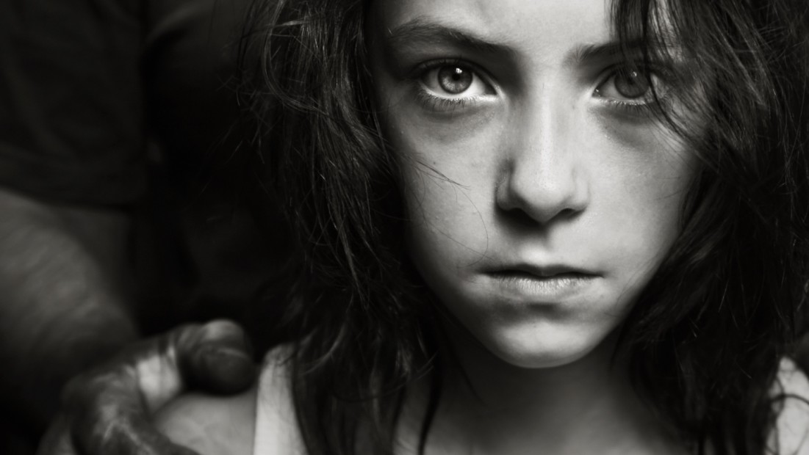

<!DOCTYPE html>
<html>
<head>
</html><link rel="stylesheet" href="https://maxcdn.bootstrapcdn.com/bootstrap/4.4.1/css/bootstrap.min.css">
<link rel="stylesheet" href="https://cdnjs.cloudflare.com/ajax/libs/font-awesome/4.7.0/css/font-awesome.min.css">
</head>
<style>
  .jumbotron{
    color:white;
    background-image:url('images/jumbg.jpg');
    background-size:cover;
    font-family:Bernard MT Condensed;
    
  }
  </style>
<body>
	    
<header>
<nav class="navbar navbar-expand-md bg-dark navbar-dark">
  <!-- Brand -->
  <a class="navbar-brand font-weight-bolder" href="#"><h2>RESCUE.orG</h2></a>

  <!-- Toggler/collapsibe Button -->
  <button class="navbar-toggler" type="button" data-toggle="collapse" data-target="#collapsibleNavbar">
    <span class="navbar-toggler-icon"></span>
  </button>
  </button>

  <!-- Navbar links -->
  <div class="collapse navbar-collapse" id="collapsibleNavbar">
    <ul class="navbar-nav ml-auto">
      <li class="nav-item">
        <a class="nav-link" href="index.html"></span>Home</a>
      </li>
      <li class="nav-item">
        <a class="nav-link" href="about.html">About</a>
      </li>
	    <li class="nav-item">
		    <a class="nav-link" href="contactus.html">Contact Us</a>
	    </li>
	 <li class="nav-item">
		    <a class="nav-link" href="facts.html">Facts</a>
	    </li>
        </ul>
        </div></div></nav>

    <section class="my-5">
<div class="py-2">
<h1 class="text-center"><p style="font-size:60px"><b>FACTS ABOUT HUMAN</b></p> 
<p style="font-size:55px"><b>TRAFFICKING</b></p></div>
<hr class="w-75" style="height:5px; border-width:75%;color:blue;background-color:blue">
<div class="container-fluid">
<div class="row">
<div class=" col-md-6 offset-md-3"><div class="py-4">
</div>
 
<p>
Human trafficking is a crime that forcefully exploits women, men, and children. According to the United Nations, human trafficking affects every country in the world, but it’s not talked about enough. So we’re here to talk about it. Read on to learn more about human trafficking, and find support resources and ways you can take action at the Polaris Project, Love146, and Free the Slaves.</p>
<ol type = "1">
	<li>Trafficking involves transporting someone into a situation of exploitation. This can include forced labor, marriage, prostitution, and organ removal. This kind of exploitation is known by a few different names -- “human trafficking,” “trafficking of persons,” and “modern slavery” are the ones accepted by the United Nations. </li>
	<li>It’s estimated that internationally there are between 20 million and 40 million people in modern slavery today. Assessing the full scope of human trafficking is difficult because so cases so often go undetected, something the United Nations refers to as “the hidden figure of crime.”</li>
	<li>Estimates suggest that, internationally, only about .04% survivors of human trafficking cases are identified, meaning that the vast majority of cases of human trafficking go undetected.</li>
	<li>Human trafficking earns global profits of roughly $150 billion a year for traffickers, $99 billion of which comes from commercial sexual exploitation.</li>
	<li>Globally, an estimated 71% of enslaved people are women and girls, while men and boys account for 29%.</li>
	<li>Estimates suggest that about 50,000 people are trafficked into the India each year, most often from Mexico and the Philippines.</li>
	<li>In 2019, over half (51.6%) of the criminal human trafficking cases active in the India were sex trafficking cases involving only children,majorly girls.</li>
	<li>Reports indicate that a large number of child sex trafficking survivors in the India belongs to slums or lower poverty regions.</li>
	<li>Advocates report a growing trend of traffickers using online social media platforms to recruit and advertise targets of human trafficking.</li>
	<li>The average age a teen enters the sex trade in the India is 8 to 14 years old. Many victims are runaway girls who were sexually abused as children.</li>
	<li>Traffickers force many Indian migrants who willingly seek employment abroad into construction, domestic work, factories, and other low-skilled sectors in many regions, especially Gulf countries and Malaysia, often following recruitment fraud and exorbitant recruitment fees.<br>(To contact the Human Trafficking Hotline: call +91-11-42244224, text 233733, or chat online.)</li>
</ol>
	</div></div>
<div class="jumbotron text-center">
  <h4>SPEAK UP FOR THE POOR AND HELPLESS</h4>
  <p><h1><b>AND SEE THEY GET JUSTICE</b></h1></p>
  <a class="btn btn-primary btn-lg"  data-toggle="tooltip" title="click here to get involved with us." href="registration.html" role="button">GET INVOLVED</a>
</div>
</div>
</div>
</div>
<footer>
   <p class="text-center bg-dark text-white">@copyright RESCUE.orG 2020</P> 
</footer>

</body>
</html><link rel="stylesheet" href="https://maxcdn.bootstrapcdn.com/bootstrap/4.4.1/css/bootstrap.min.css">
